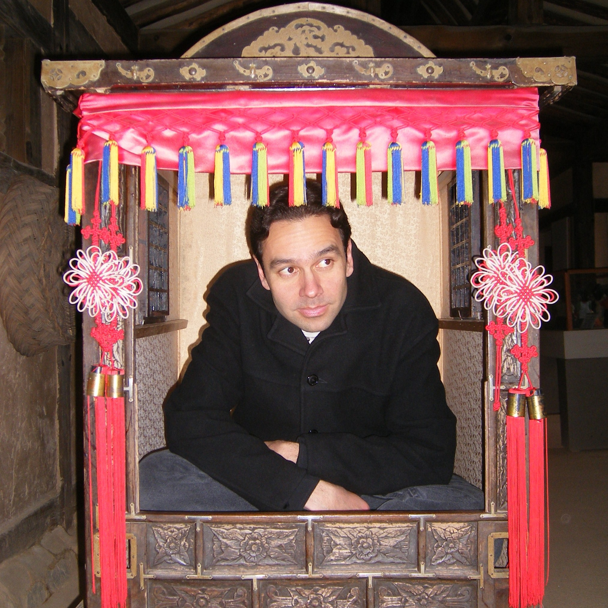

About Me

My name is Adolf Schmuck. I am currently teaching ESL (English as a Second Language) at Grossmont College. I have been teaching ESL for over 12 years, and have also lived and taught abroad in Taiwan and Korea. I've mainly taught adults, but I have also taught children. My students come from all over the world.
I am interested in music and web development. Prior to starting this web development course at UCSD Extension, I started learning web development on my on through books, online classes, and online resources. I've made some simple web pages on my own to put into practice what I have been learning on my own. I have even started working on a website for my band and solo music, but it is not yet finished. As I continue with my web development studies, I hope to learn as much as I can so that I will be able to finish the website I started working on.
I am currently enrolled in the Coding Bootcamp at UCSD Extension. I am thinking about changing career paths and possibly going into the field of web development in the future. I look forward to everything that I will be learning in the course.